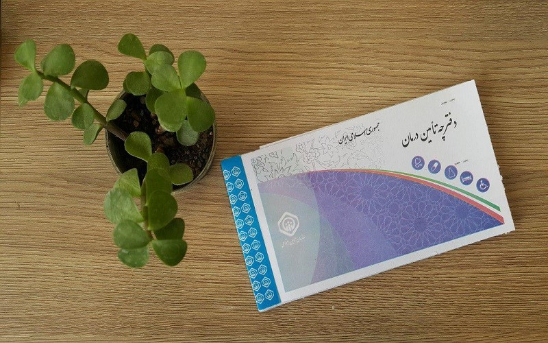

آموزش اتصال به سایت تامین اجتماعی از خارج ایران
آموزش جامع و گام به گام اتصال به سایت تامین اجتماعی ایران از خارج کشور با استفاده از DNS رایگان آبرودن.
ادامه مطلبآموزش جامع و گام به گام اتصال به سایت تامین اجتماعی ایران از خارج کشور با استفاده از DNS رایگان آبرودن.
ادامه مطلبآموزش جامع و گام به گام اتصال به سایت بانک ملت ایران از خارج کشور با استفاده از DNS رایگان آبرودن.
ادامه مطلبآموزش جامع و گام به گام استفاده از برنامه شاد خارج از ایران با استفاده از VPN یا DNS.
ادامه مطلبآموزش جامع و گام به گام استفاده از سرویس DNS رایگان آبرودن و مقایسه آن با VPN های پولی مانند سرف تانلز و یوز وی پی ان
ادامه مطلبآموزش تغییر DNS در تلویزیونهای ال جی با سیستم عامل WebOS برای دسترسی به فیلیمو، نماوا و سی فیلم از خارج ایران
ادامه مطلببررسی چالشها و راهحلها برای دسترسی به اپلیکیشنها و سایتهای ایرانی از خارج از ایران
ادامه مطلبراهنمای استفاده از وی پی ان رایگان ایران برای دسترسی به سایتهای بانکی و خدمات اینترنتی ایرانی برای کاربران خارج از کشور
ادامه مطلب